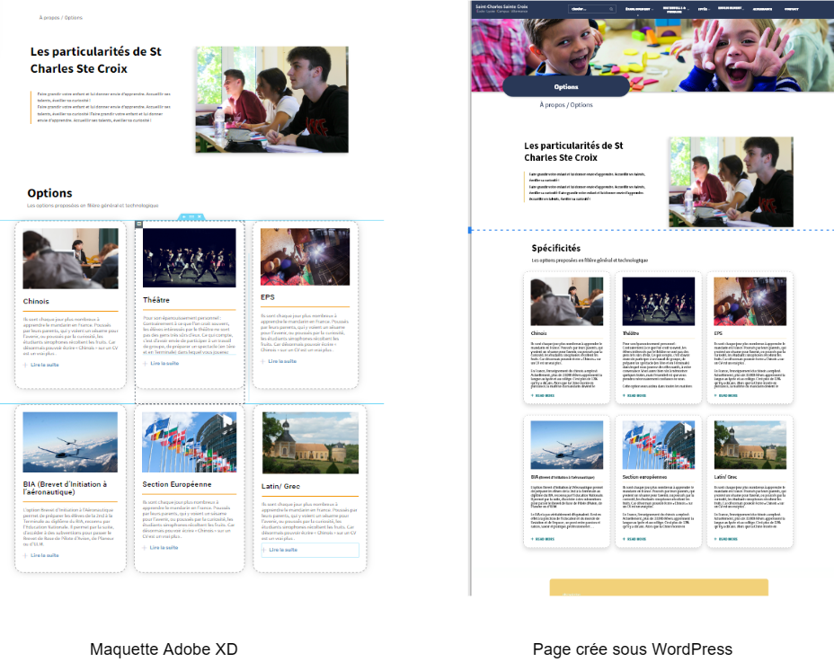
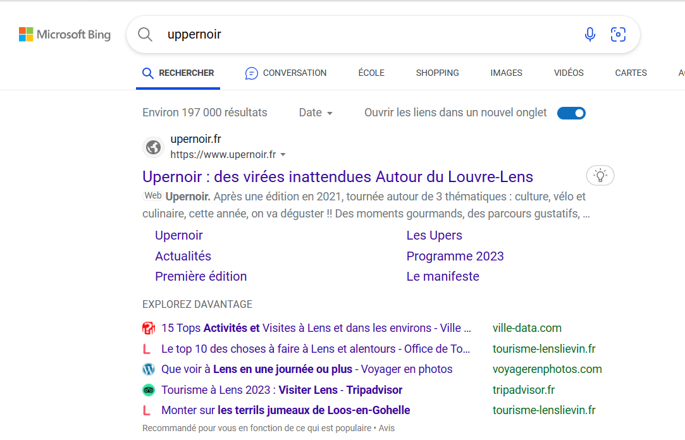
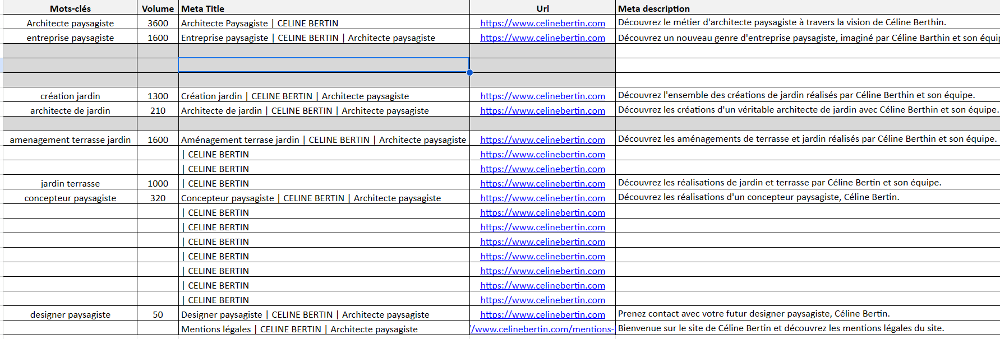

Upernoir
Crée par : Titouan CLAPIERInformation du projet
- Category: Site Wordpress
- Date du projet: 01/05/2022
- URL du projet: https://www.upernoir.fr/
- Type: projet de stage
Detail
Languages : HTML, CSS.
Outils : Wordpress.
Contexte donné :
Développement d'un site pour la première édition du programme Upernoir,
un programme visant à découvrir des éléments de culture en lien avec le noir.
Ce site devait répertorier une liste d'activités et de programmes en lien avec ces sorties culturelles.
Compétences utilisées :
Développement d'un site WordPress en exploitant les données de l'organisation grâce à des maquettes Adobe XD:

Développer la présence en ligne de l'organisation via differents moyens, référencer les services en ligne de l'organisation et mesurer leur visibilité :

Utilisation de slug, de mot clés, de meta-title, de meta description:
